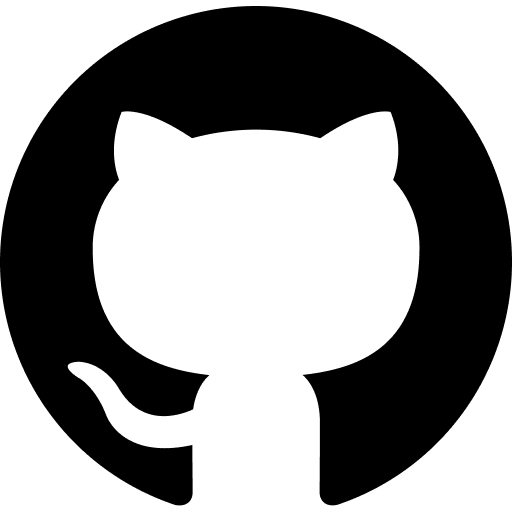
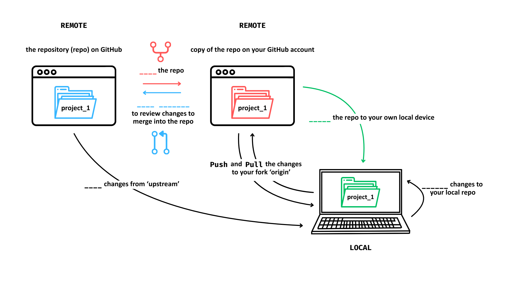

Introduction to Collaborative Coding with GitHub
Licence

This work was originally created by Anna Krystalli from RSE-Sheffield under a MIT licence (original repository). It was subsequently adapted by Malika Ihle during her time at Reproducible Research Oxford, with the contributions of Adam Kenny. This work by Elizabeth Waterfield, Sarah von Grebmer zu Wolfsthurn, and Malika Ihle is licensed under a CC-BY-SA 4.0 Creative Commons Attribution 4.0 International SA License. It permits unrestricted re-use, distribution, and reproduction in any medium, provided the original work is properly cited. If you remix, transform, or build upon the material, you must distribute your contributions under the same license as the original.
Presenter Notes: The Creative Commons Attribution–ShareAlike 4.0 license, or CC BY-SA 4.0, allows others to copy, share, and adapt a work in any medium, including for commercial purposes. These permissions are broad and cannot be withdrawn as long as the license terms are followed. The main requirement is attribution: users must give appropriate credit to the original creator, provide a link to the license, and clearly indicate whether any changes were made, without implying endorsement by the original author. In addition, the ShareAlike condition means that if someone modifies or builds upon the work, the resulting material must be distributed under the same CC BY-SA 4.0 license, or a compatible one. Finally, users are not allowed to apply legal or technical restrictions, such as DRM, that would prevent others from exercising these same rights.
Contribution statement
Creator: Waterfield, Elizabeth ( 0009-0006-3725-6730)
0009-0006-3725-6730)
Reviewer: von Grebmer zu Wolfsthurn, Sarah ( 0000-0002-6413-3895)
0000-0002-6413-3895)
Consultant: Ihle, Malika ( 0000-0002-3242-5981)
0000-0002-3242-5981)
Presenter Notes: Speaker notes may act as a guiding script for delivering the presentation. These notes contain key information, such as phrases, explanations, or transitions, that can be said aloud to clarify concepts, emphasize important points, or maintain the flow of information.
Instructor Notes: Instructor notes provide teaching support but are not intended to be communicated to the learners directly. These notes contain additional context, such as learning objectives, common issues, and pedagogical tips, to help the instructor adapt their teaching to the learner’s needs as well as anticipate challenges.
Acessibility Tips: Where applicable, this is a space to add any tips you may have to facilitate the accessibility of your slides and activities.
Prerequisites
Before completing this submodule, please carefully read about the necessary prerequisites.
| Prerequisite | Description | Where to find it |
|---|---|---|
| R and RStudio installed | Latest versions of both R and RStudio | https://posit.co/download/rstudio-desktop/ |
| Basic R skills | 3.2. Introduction to R - Part I | Module 3.2. |
| Advanced R skills | 3.3. Introduction to R - Part II | Module 3.3. |
| Basic Git skills | 3.4. Introduction version control (Git) with RStudio | Module 3.4. |
| GitHub account | Create a personal account on GitHub | github.com |
| Practice GitHub repo | Fork the LMU OSC Collaborative-RStudio-GitHub repository to set up a practice repository for the exercises in this lesson | See next slide |
Presenter Notes: Let us first take a look at these prerequisites. These are important steps to be able to understand what will be covered in this submodule and complete the exercises. Usually, the instructor will set up the practice repository, but learners completing this lesson independently may also create it themselves.
Instructor Notes: These are the prerequisites for this submodule. Before you get started on this submodule with your audience, you need to ensure that the audience fulfills these criteria. In this session, we will assume that your audience has basic R skills and completed the corresponding workshops. We also assume familiarity with Git and that the audience has also completed that submodule. We also assume that, through the previous workshops, participants have downloaded and installed R and RStudio on their local machines. Lastly, the instructor should create a fork of the LMU OSC Collaborative-RStudio-GitHub repository. This will be the main repository for the class session and activities (that is, this forked repository is the repository that the learners will fork and where the contributions will go when merged).
Instructors only: Practice repo
Before we collaborate, we need to set up a practise repository.
- Log into your own GitHub account
- Go to the LMU OSC’s Collaborative-RStudio-GitHub repository (see also https://github.com/lmu-osc/Collaborative-RStudio-GitHub/tree/main)
- Create a fork by clicking on “
Fork” - Make sure you are set as the owner of the new repository and do not change the name of the forked repository then hit “
Create fork”
You have copied all the materials from the LMU OSC Collaborative-RStudio-GitHub repository needed to do this session’s activities with your own GitHub account. This fork will be referred to as the main repository from here on and is the repository your learners will work on.
Presenter Notes: We need a main repository where we will combine or merge all our contributions into one project. To have all the materials needed to follow along and complete the practical activities, I will create the fork and use it as the main repository.
Instructor Notes: The fork of the original repository will act as the main repository for this session. This means that learners would then have to fork this fork in order to make their individual changes and contributions. Doing this allows you as the instructor to view the pull requests made to this fork and subsequently merge them (OSC has ownership of the original repo and so any pull requests to that repo would require their approval). It is advisable to do this before the session so that on the day of the lesson, you can easily give the learners a link to access this main repository. Please note that this means what you and your learners see on your screens during this session will not match with some of the images in the Practical exercises (for example, the owner of the repository will be you and not “lmu-osc”).
Questions from the previous submodule
Any remaining questions about the most recent content and/or practical exercises?
Presenter Notes: Are there any questions from what was discussed during the last session? Are there any remaining thoughts or discussion points?
Instructor Notes: - Aim: clarify questions from the previous submodule and/or to discuss assignments.
- Additional slides may need to be added depending on the nature of the homework assignments.
- It is critical for the learning process to ensure that learners are on the same page and have been able to achieve the learning goals of the previous workshop.
- Not applicable if this set of slides corresponds to the first submodule of a new module or if this slide deck is used in an asynchronous way.
Before we start: Survey time!
Please complete survey labeled “OS-M3-S5-GitHub-starting_survey”.
Presenter Notes: Let’s start the session by gauging where our Quarto skills are at this point. Scan the QR code and go to the “starting survey” question series. Please answer honestly and don’t worry about having little to no prior knowledge about Quarto. This lesson is for beginners.
Instructor Notes: - Aim: the pre-submodule survey serves to examine learners’ prior knowledge about the submodule’s topic.
- Scanning the QR code would take them to a room on Particify with multiple question series. Direct the learners to take the one labeled “OS-M3-S5-GitHub-starting_survey”.
- Use free survey software such as Particify to establish this. You can use the example survey, edit it or create your own. Make sure to have a QR code for easy scanning, as well as the link displayed on the slides.
What is your level of familiarity with working on GitHub?
I have never heard of it before.
I have heard of it but have never worked with it.
I have basic understanding and experience with it.
I am very familiar and have worked with it extensively.
Which of the following concepts or skills do you feel most confident about in relation to Git and GitHub? (Select all that apply)
Creating and initializing a new Git repository.
Making commits and writing meaningful commit messages.
Cloning a repository from GitHub to my local machine.
Pushing local changes to a remote repository.
Pulling or fetching updates from a remote repository.
Forking a repository and working on my own copy.
I am not sure about any of these concepts.
On a scale of 1 to 5, how comfortable are you with using Git and GitHub for collaborative coding and version control? (1 = Not comfortable at all, 5 = Very comfortable)
1
2
3
4
5
Which statement best describes your experience with pushing and pulling in the context of working collaboratively on GitHub?
I have never heard about either of these concepts.
I have heard about these concepts before, but do not remember the exact details.
I have a conceptual understanding of these concepts, but have not actively integrated them into my workflow.
I have a conceptual understanding of both concepts and actively integrate them into my workflow.
Discussion of survey results
What do we see in the results?
Presenter Notes: Looking at the results from this small survey, what can we take from this? There will be a similar post-submodule survey to examine understanding and learning progress.
Instructor Notes:
Aim: briefly examine the answers given to each question interactively with the group.
Use visuals from the survey to highlight specific answers.
Make it clear to the group that there will be a similar post-submodule survey to examine understanding and learning progress.
Where are we at?
Previously:
- Basic and advanced R skills (data manipulation, plotting, etc.)
- Introduction to version control using Git
Up next:
- Collaborating on projects remotely via GitHub
- Tracking changes of each contributor on GitHub
GitHub offers a platform that enables transparent sharing, version control, and reproducible workflows. These are some of the core pillars of Open Science.
Presenter Notes: So far, you have built up your R skills from basic data handling to visualizations and learned the fundamentals of version control with Git. Next, we are moving into how these tools come together for collaboration such as: working on projects remotely and tracking changes from multiple contributors.
Instructor Notes:
Aim: Place the topic of the current submodule within a broader context.
Consider GitHub as a solution to some existing challenges in Open Research to remind learners what they are working towards and what the bigger picture is.
Learning goals
At the end of this session, you should be able to:
- Navigate GitHub to collaborate on shared projects.
- Fork and clone repositories to work locally without altering the main branch.
- Commit, push, and pull changes to keep your project tracked and synchronized.
- Design a collaborative workflow that enhances the openness and reproducibility of your own projects.
Presenter Notes: By the end of this session, you should feel confident navigating GitHub and using it for collaboration. You will learn how to fork and clone repositories to create local copies, commit and push your work, and pull updates from others to stay in sync. Finally, you will see how these actions build a workflow that supports open, transparent, and reproducible research or projects.
Instructor Notes:
Aim: Formulate specific, action-oriented goals learning goals which are measurable and observable in line with Bloom’s taxonomy (Anderson et al., 2001; Bloom et al., 1956)
Emphasis is placed on the verbs of the learning goals that align with the skills you want to develop or assess.
Covered in this session
- GitHub workflow
- Fork a repo
- Clone a repo
- Commit to a project
- Push changes
- Pull request
- Merge changes
- Pull upstream
Presenter Notes: This session will be an introduction on how to navigate GitHub and the language (coding) used to communicate with GitHub using your RStudio terminal. What follows are essentially commands you can use to collaborate with others on projects by accessing the files, making changes without affecting anyone else’s progress, keeping your work updated, and more.
Instructor Notes: - Aim: To establish the core theoretical introduction of submodule topics.
Pair theoretical aspects with practical exercises and group discussions according to the Think-Pair-Share style and according to Cognitive Load Theory (Sweller, 1980).
For a 90-minute lesson, the instructor should try to “lecture” for only 20 minutes, learners should work in groups/pairs/on their own for at least 55 minutes of the lesson (+ a 15 minute break).
Key terms and definitions
-
Git:
- GitHub:
- Git repository:
- GitHub repository:
- Branch:
Presenter Notes: These are some of the key terms that will come up throughout this lesson. What are your associations with each of these concepts? Which ones have you come across before? What could these concepts refer to? What is new to you?
Instructor Notes: Use the think-pair-share paradigm to examine existing concepts and definitions. learners think for themselves what they associate with each term, discuss collaboratively in pairs and then share their thoughts with the group.
Key terms and definitions
-
Git: A version control system that tracks changes made to files over time.
- GitHub: A cloud-based, online platform that hosts Git-tracked projects.
- Git repository: (also known as repo) A folder that contains your project files and the history of all changes made to them.
- GitHub repository: An online or remote version of a Git repository that is hosted on GitHub’s servers.
- Branch: A separate workspace where you can make changes without affecting the main project.
Presenter Notes: Now let us define these key terms, even if for now they are a little abstract.
- Think of Git like a time machine for your project as it keeps track of every edit so you can go back to earlier versions or see who changed what. Git runs locally on your computer but connects easily with platforms like GitHub for sharing.
- GitHub is an online platform that lets researchers store, share, and collaborate on code and projects using version control.
- A Git repository is a folder that contains your project files and is tracked by Git so you can see the full history of changes. This folder can live locally on your computer or online, for example, a GitHub repository is a one that’s hosted online on GitHub.
- A branch is a copy of your project where you can test changes without affecting the main version. The Main Branch is the stable, official version of your project. You can work on a branch, then merge your updates back into the main branch once they’re reviewed or ready.
Instructor Notes: Base yourself on conceptual change theory and examine existing concepts in relation to some key terms. Re-examine formation of new concepts at the end of the lesson.
Collaboration challenges
Researchers can face many challenges when working collaboratively in a team with other researchers or in multi-organisational projects. Some of these are:
- Poor communication
- Disconnected collaboration
- Limited transparency of project materials
Think about your past experience working collaboratively in a team. Did you face these challenges? Did similar or other challenges arise?
Presenter Notes: For many projects, researchers working collaboratively or in teams can encounter several challenges that affect progress. Poor communication is one such challenge where relying on tools like emails or messaging apps can become confusing or cause important information to be lost. Researchers who work from different institutions, locations, or time zones can find it difficult to update code or review the work of the other contributors. Limited transparency and visibility of things like analysis scripts or data processing steps can also be a barrier for collaborators or reviewers to see how results were produced. Reflect on your own experience working in a team… were any of these problems issues for you too?
Instructor Notes: Bring the lesson to life by making it relatable. Ask learners to think about times they have experienced these or similar challenges. This way the solutions to these problems that GitHub provides will not seem too abstract and learners can begin thinking about how they would incorporate working on GitHub in their projects. Select a few challenges and discuss with your learners.
GitHub can help!

GitHub can help facilitate better collaboration between researchers. Here is how:
- Better communication with messages describing changes made, inline commenting, and code reviewing.
- The project materials are hosted and shared publicly or privately to support transparent collaboration.
- By hosting the materials on online repositories, teams can work from anywhere, contribute asynchronously, and review each other’s work.
Presenter Notes: GitHub is a collaborative hub for open and transparent research. Using it for a collaborative project can solve the challenges we just looked at. GitHub improves communication with features like commit messages that describe the changes made and the option to have discussions alongside the code. By allowing teams to host and share repositories online, everyone can contribute from anywhere. This connects all the contributors on a shared online workspace without overwriting each other’s work. This also includes hosting and sharing project materials like the code used and anlysis scripts so that they can be visible by the public or only accessible by the team. By doing this, people can see the evolution of the research and how analyses were done. Ultimately, GitHub supports the core principles of Open Science: openness, transparency, and reproducibility.
Instructor Notes:
- Aim: Core theoretical introduction of submodule topic and how it can provide solutions to real problems that researchers face.
What is collaborative coding?
With collaborative coding:
- Multiple people can work and contribute on different parts of the same project at once.
- Using Git and GitHub keep everyone’s work organized, merged, and tracked.
- There’s more transparency and reproducibility in research projects.
- The project/materials are reviewed and improved collaboratively.
Presenter Notes: Collaborative coding means that a whole team can contribute to the same project in real time where everyone can edit, review, and improve the same code without overwriting each other’s work. Git and GitHub make this possible by keeping track of every change, merging updates smoothly, and maintaining transparency. This approach makes teamwork easier and strengthens openness and reproducibility in research.
As we go through the different actions you can do with your project files on GitHub, we’ll also discuss how it contributes towards a collaborative workflow.
Zooming out: GitHub collaborations
Collaborative coding is only one way a team or a research group can work together on a single project. GitHub supports collaborative coding, but more generally collaboration on many different types of materials/projects, not just code.
Creating a workflow with GitHub
What a workflow using GitHub can look like:
Presenter Notes: Here is what a typical workflow using GitHub looks like:
- Start with a central repository that contains the shared project files.
- Fork the repository to create your own copy on GitHub.
- Clone your fork to your local computer so you can work offline.
- Make changes locally and commit them to track your progress.
- Push your commits to your fork on GitHub without affecting anyone else’s work.
- Pull updates from the main branch regularly to keep your copy up to date.
- When your changes are ready, open a pull request so they can be reviewed and merged into the main branch.
Instructor Notes: Learners with no prior knowledge in GitHub may not know what any of these terms mean but this is a helpful introduction to how the different actions on GitHub come together to create a workflow and would help learners make the connection between them as they follow along in this session to learn them. This image will be shown again at the end so learners can have a chance to view the diagram with a clearer understanding of what the terms mean.
An activity suggestion: Have learners work in pairs or small groups to discuss the question “What problems does this workflow solve?” Look at the diagram and reflect on some of the solutions GitHub provide and see where or what step in the workflow helps with the challenges in collaboration (for example: cloning the repo so the copy on the local device is still connected to the main project helps solve the issue of disconnected collaboration.)
Fork a repo
To fork a repo means to copy a collaborator’s repo to your own remote GitHub account.
- Enables multiple contributors to work in parallel.
- Make changes without affecting the original project.
- Provides a personal workspace to test ideas.
Presenter Notes: Now let us go through each of the steps in the workflow and practice them. The first step is to make your own copy of the project repository to your GitHub account. To do this, you need to fork the repo, which means to copy it so that you have your own version where you can host your changes to send it with changes back to the main repository later.
How does this contribute towards collaboration? It enables multiple contributors to work on the project at the same time. The changes you make on your copy won’t affect the original project, so it becomes your personal workspace where you can freely test ideas ideas.
Instructor Notes: This is where the practice repo you had set up comes in. The learners will make a fork of the one you previously forked from the OSC GitHub account.
Practical exercise 1: Fork a repo
Here’s a link to the main repository:
By repo on GitHub we mean one of two things:
1) the repository your instructor created on their own remote GitHub account for you to work on, or
2) an existing repo for practice e.g., https://github.com/lmu-osc/Collaborative-RStudio-GitHub/tree/main. Go to the repo that is available to you now.
Presenter Notes: Go to the main repository of the project we will be using for today, e,g., the repository that I provided you with today. Click the link to be redirected to the repository on GitHub.
Instructor Notes: Provide learners with the name or link to your forked repo created for this session. Replace the information in the first line with the practice repository. Make a title for the link (for e.g., “Practice Repository for Collaborative Coding”) in the square brackets and then copy and paste the url link to the practice repository in the brackets. This way, the learners can easy navigate to the practice repository they must then fork in the next slide.
Practical exercise 1: Fork a repo

Note that the screenshot may not match exactly because it depends which repo you forked from: You may be forking from your instructor’s GitHub instead of from the practice repo from ‘lmu-osc’.
Presenter Notes: On the repository, find the toolbar at the top that is next to the name of the repository and click “Fork”.
Instructor Notes: The ‘main repository’ here will be the one that you forked from the original lmu-osc tutorial and was subsequently copied to your own remote GitHub account. In essence, your learners are now creating a fork of your fork. This is also the first instance where what you and your learners see on screen may not match identically with what this example image shows.
Practical exercise 1: Fork a repo

Presenter Notes: It takes you to a new page where you will change the ‘owner’ to your GitHub account, leave the repository name as is and then click the green “Create fork” button at the bottom.
Instructor Notes: The only thing that should look different for each learner is the “Owner” field- it should reflect each individual’s GitHub account name.
Fork a repo
You will see the fork of the repository on your GitHub account:

Presenter Notes: When you click on the drop-down arrow next to “Fork” on the main repository, you will see your fork of the repository on your GitHub account.
Clone a repo
To clone a repo means to copy the project files onto your local device, such as your personal computer.
- Connects your local work directly to the team’s online repository.
- Makes it easy to sync updates between contributors.
When you fork the repo, a copy is made on your remote GitHub account. When you clone a repo, a copy is downloaded from GitHub onto your local device.
Presenter Notes: To work on your copy or version of the project, clone it to your personal device. When you clone the repo, it takes the project from GitHub and downloads it onto your personal device so now you have an offline version of the project to work on.
How does this contribute towards collaboration? You can now have a copy of the project files on your local device that’s still connected to the online repository and it makes it easy to sync updates between contributors.
Instructor Notes: Both forking and cloning involve making copies of the repo but to different locations, so make this distinction clear. If there is any confusion, you can go back to the first diagram of the workflow to visualize the difference.
Practical exercise 2: Clone a repo

Presenter Notes: Let us practice this using the forked repository you just made. In your fork, find the green “Code button”. Once you find that, it will most likely be on the HTTPS tab, so we need to click on the SSH tab instead and copy the URL given there.
Practical exercise 2: Clone a repo

Presenter Notes:
- Now let’s switch to RStudio where we can use the built-in functions for Git. This way we can make our changes and manage our workflow in one place.
- When you clone the files, you will put them in a new project on your device. To do this: open RStudio and go to ‘File’ then create a new project by selecting “New Project”.
Instructor Notes: RStudio provides a simple point-and-click interface to perform some of the actions in the GitHub workflow, however, there are other ways to communicate with GitHub using your local device.
Practical exercise 2: Clone a repo


Presenter Notes: We need to select “Version Control” to connect RStudio directly to the GitHub repository and work with version-tracked code. Then, we select “Git” to clone the project directly from the GitHub repository.
Instructor Notes: The “Git” option appears if Git is correctly installed on your device. If it does not appear, check if Git has been installed and restart RStudio.
Practical exercise 2: Clone a repo

First, make a new folder on your device. Then, you can change the path under “Create project as subdirectroy of:” to place this Git repository in that new folder. We are making a new folder because it is advisable that each folder has its own Git database.
Presenter Notes: Remember the URL we copied from the SSH tab? Now we need to paste it under “Repository URL”. If you’ve created a folder with a Git database for a previous lesson, make a new one for this. When you make a new folder, click “Browse…” and select that folder. Each folder should have it’s own Git database. Next, when you hit “Create Project”, you’ll need to enter your password.
Instructor Notes: If learners are confused as to which password is required: it is the password for their individual GitHub accounts.
Clone a repo

Now, when you click on the “Files” tab in RStudio, you should see all the files from the main repository.
Presenter Notes: And that’s it! You should now have the files from the main repository on your local device. Check this by clicking on the “Files” tab in RStudio and check that all the files from the main repository are now appearing. Compare what you have on your RStudio project to what is in your fork on GitHub.
Instructor Notes: It would be helpful at this stage to point out the “params” sub-folder as one of the files here in the cloned repository. This is the sub-folder containing the R file that learners will need to copy in the next exercise.
Commit to a project
To commit to a project means to save the file with the changes you made locally in your version control system.
- Records progress in small and trackable steps
- Lets others see exactly what was changed
- Makes it possible to revert or review changes if there are bugs
Merge conflicts happen when Git cannot automatically combine changes because the same part of a file was edited differently by two collaborators. Frequent commits help with resolving conflicts because they create clear checkpoints in your project’s history. GitHub also offers GitHub issues as a communication tool to resolve conflicts.
Presenter Notes: A commit is like taking a snapshot of your project after you make changes. Each commit records what was changed, when, and by whom. You usually include a short message describing the update, for example, “Updated code for analysis,” and saves it in Git’s version history.
How does this contribute towards collaboration? Frequent commits records the progress of each contributor in small, trackable steps. It let’s others see what changes had been made. Frequent commits also make it possible to review changes if something breaks because now you can go back, review changes, and isolate problems to fix it.
Practical exercise 3: Commit
Before you commit to a project, you need to make some changes to the project.

Presenter Notes: We are still in RStudio. In the ‘Files’ tab, find the ‘params’ sub-folder and open it. Now within this sub-folder, find an R file called ‘params_templ’ and click the tickbox next to it to select it. This is what where we will be making our changes to the project. Then click on the drop-down arrow by “More” and click “Copy”.
Instructor Notes: Copying the file and then editing the copied file is specific to this practice exercise. You do not always need to copy the file to then make changes to it, a project can require a contributor to make changes to the file directly. It depends on the project.
Practical exercise 3: Commit

Presenter Notes: You’ll be prompted to give the copied file a name/title, use something identifiable like including your first name.
Practical exercise 3: Commit

Presenter Notes: In this exercise, each person will edit their own parameter file to practice making a commit. Update these three values: a numeric for “sig2”, a character name for “species.name”, and a hex color code for “color”. You can install the package “colourpicker” which would create an Addin called “Colour Picker” to help find a hex code for a desired color. The “Addins” drop-down menu is found on a toolbar at the top of the RStudio workspace.
Instructor Notes: Make sure learners do NOT put additional information (more than what’s required) as this can result in the code breaking.
Practical exercise 3: Commit

Presenter Notes: After this, save the file as normal by going to “File” and then clicking “Save”. In the Git tab on RStudio, tick the checkbox next to your copied file under the “Staged” column. Staging a commit means you’re selecting which specific changes you want to include in your next commit. Then click the “Commit” button.
Practical exercise 3: Commit

Presenter Notes: You should leave a message to accompany your commit. This is like describing the changes you made to make your commits more informative. For example, just state what you added to the file. Then, Click the “Commit” button.
Instructor Notes: You can remind learners that this does not mean their changes will show up on GitHub, that requires an additional step. But this does mean their activity and changes were recorded in the project history.
You made a contribution!
Great, now you have made changes! You added a file with your parameters on a shared project and committed it. Let’s take a minute (literally) and recap what you did to achieve that.
Activity: one-minute paper!
- You have 60 seconds to write down what steps you took to collaborate on this project so far.
- Think of the names of the actions, in which order you did them, and how can this be beneficial to you as a collaborator.
Presenter Notes: You have successfully made a contribution by copying a file and making some changes to it in the shared project. This is how collaboration on GitHub happens - by each contributor having their own copies of the project and making their individual changes. Before we go further, let’s take a minute to recap what steps we took to get here with this activity.
You have 60 seconds to write down these steps. Think of the names of the actions, in which order you did them, and how can this be beneficial to you as a collaborator.
Instructor Notes: This one-minute paper activity is to give the instructor an idea of how the learners are progressing with the steps of collaborative coding so far and if they are understanding how the steps fit into a workflow using GitHub. It also doubly acts as a way to reinforce the concepts discussed in this session. If you want to make the activity a bit easier, you can provide them with the terms: repo, fork, clone, commit.
Push changes
To push changes means to upload your local commits from your local computer to the remote repository on GitHub.
- Keeps the online version of the project up to date.
- Makes your work visible to all contributors in real time.
- Enables others to pull your latest edits and build on them.
Presenter Notes: The next step after making your changes and committing them is to push the changes you made from your local device onto the remote forked repository that is on your GitHub account.
How does this contribute towards collaboration? It keeps the online version of the project up to date with all the changes made and makes it visible to all the contributors. It also enables others working on the project to take your edits and build on them.
Practical exercise 4: Push

Presenter Notes: The changes you made are just on your local device and committing it means you just recorded it in the project history. But it is not et on your remote fork on GitHub. To send the changes you just made to the file on your local device to your online fork on GitHub, you need to click the “Push” button in the Git tab. You’ll then need to enter your password again.
Push changes
If you successfully pushed your changes, you would see a pop up box like the one below:

Presenter Notes: If all went well, you will see a pop up box with a message like this one to let you know the changes were successfully pushed to the remote repository. An additional way to make sure your changes were pushed, refresh your GitHub repository webpage and check to see if the file you copied is now appearing. The commit message should also appear next to it on GitHub.
Push changes
Refresh the page of your forked repository on GitHub and you should see your new file with the commit message next to it. Refreshing the page is an important step to update your forked repository with the new file you added.
Presenter Notes: Now go back to your forked repository on GitHub and refresh the page. This is an important step to confirm that the file together with the commit message are appearing and to update your fork with the changes you made.
Instructor Notes: If a learner does not refresh the page, this can cause problems during when merging. If they do not refresh the page and simply make a pull request, an empty ‘params_tmpl.R’ file comes up when the owner views the request.
Pre-break quiz
Please complete survey labeled “OS-M3-S5-GitHub-prebreak_quiz”.
Presenter Notes: Before the break, let’s take a moment to review the things we covered in the first part of this lesson. Scan the QR code again and find the quiz titled “Os-M3-S5-Github-prebreak_quiz”. This quiz has a few simple recap questions about what we’ve learned so far about using GitHub for collaboration on projects. The goal isn’t to test you, but to help you reflect on what you’ve learned and to see if anything needs a bit more clarification.
Instructor Notes: It’s important to have an idea of these key terms because they will reappear many times throughout the rest of this lesson.
- Aim: This pre-break survey serves to examine learners’ current understanding of key concepts of the submodule.
- Use free survey software such as or other survey software (particify, formR) to establish the following questions (shown on separate slides)
What is GitHub mainly used for by a team working on the same project?
Editing photos online
Hosting and collaborating on code or research projects
Sending emails and important messages to team members
Backing up personal files only
Instructor Notes: The correct answer is b.
On GitHub, why would you fork a repository?
To delete the original repository and start a new one
To download a copy of the remote repository to your local computer
To create your own remote copy of someone else’s repository on GitHub
To merge your work into the main branch and have everyone’s work in one folder
Instructor Notes: The correct answer is c.
What does it mean to clone a repository?
You download the repository from GitHub to your local device
You create a backup of your GitHub account
You make your repository private
You copy code into a new file then upload it to GitHub
Instructor Notes: The correct answer is a.
When you make changes to a file then commit it, what happens?
It deletes all previous versions of your file
It sends your work directly to the main repository
It saves your changes locally (on your device)
It approves changes made by other collaborators
Instructor Notes: The correct answer is c.
After I made changes and committed it, why would I then push the changes?
To create a new repository
To incorporate my changes into the files of the main repository
To notify my teammates that I made changes
To upload the work I saved locally to GitHub
Instructor Notes: The correct answer is d.
Break! 15 minutes
Post-break quiz discussion
What do we see in the results?
Presenter Notes: Let’s discuss the survey answers and clarify any questions before moving on to the next section.
Instructor Notes
- Aim: To clarify concepts and aspects that are not yet understood - Highlight specific answers given during the survey - Also, use this time to clarify any confusions or questions on specific topics learners may have from the first part of the session.
Pull request
To make a pull request means asking the repository’s owner to review the changes you made (from your fork or branch) and merge them into the main repository on GitHub.
- Creates a space for discussion and code review before incorporating changes.
- Encourages feedback and peer learning.
- Maintains project quality and consistency.
Presenter Notes: After pushing your changes to the remote repository, it is just on your forked copy for now and not in the main repository that has the original project files. You then need to make a pull request. This is a request on GitHub for the owner of the main repository to review your changes and then incorporate or merge them into the main repository. This can either add to or change the original project files.
How does this contribute towards collaboration? The changes can be reviewed and checked for error before making it a part of the main project. This allows for feedback, peer learning, and maintains levels of quality and consistency across the project files.
Practical exercise 5: Pull request

Presenter Notes: Now we are working in the remote repository on GitHub. In your fork, click on “Contribute” and then the green “Open pull request” button.
Practical exercise 5: Pull request

Presenter Notes: Check the settings to ensure the “base repository” is the main repository that you initially forked and the “head repository” is your forked repository. You should see a message in green saying “Able to merge” and this means that the request to merge does not create any conflict.
Instructor Notes: The ‘base repository’ should automatically be the one the learners forked (the main repository used in this session), but it’s important to double-check it as it will, again, not match identically with what’s shown in the example image (because you are not using the lmu-osc original repo for this activity).
Practical exercise 5: Pull request

- You should see a conversation tab around your pull request in the original repository.
Presenter Notes: Add a message describing the changes you made. Again, you can just state what you added. Now click “Create pull request”. In the original repository, you should now see a conversation tab around the “Pull request” button.
Merge changes
To merge changes means to combine updates from different branches or contributors into one unified version of the project.
- Brings everyone’s contributions together.
- Ensures new work integrates smoothly with the main branch.
- Helps resolve overlapping edits or conflicts between files.
Presenter Notes: Now that the changes have been made and you opened a pull request, the next step is for those changes to be reviewed and incorporated into the main branch. This is what is meant by “merge” because the contributions from the different collaborators are merged into the one project that everyone is working on.
How does this contribute towards collaboration? This brings the contributions together in one place, ensures new work integrates smoothly with the main branch, and will make overlapping edits or conflicts between files visible so you can go in and resolve them.
How to merge changes

The owner of the main repository:
- Goes to their “
Pull requests” tab to inspect the changed files - Ensures that the parameters were inputted correctly so as to not break down their code down the line
In this example, the file “malika_rocks.R” is being reviewed to then be added to the “params” sub-folder in the main repository project files.
Presenter Notes: If you are the owner of the repository and will merge files, you must first click on the “Pull requests” tab and inspect the files there. Take one and check that everything was done correctly so it’s ready to merge.
Instructor Notes: First go through the slides of this section to see how to merge changes, then do a live demonstration using the changes they made to the Example Project. For this session, the instructor created the GitHub repository and therefore is the one to review and merge the changes. But it is still important for the learners to learn HOW to merge changes for when they begin projects of their own.
How to merge changes

If everything looks fine, the owner will:
- Go back to the “
Pull request” tab - Write a comment
- Merge the pull request and confirm the merge
Presenter Notes: If everything looks fine, go back to the “Pull request” tab, leave a comment (this is optional), and click on “Merge pull request” then “Confirm the merge”. And now that file that was inspected is now incorporated into the project files in main repository.
How to merge changes
Now let’s see all the contributions work together!

- The owner of the main repository will pull the new contributed files from GitHub into their local repository using the “
Pull” button in RStudio.
All the contributions that were merged into this repository should show up in the ‘Params’ sub-folder in the local repository.
Presenter Notes: Let us see how all the contributions are integrated into a single document. First, the owner of the main repository needs to pull all the files that were pushed by the other contributors so that all the new files will be on the local copy of the repository.
Instructor Notes: The instructor (that is, the owner of the main repository) will perform this task to pull the changes made by the learners into the main repo.
How to merge changes

- Then, the owner will locate and open the “
plot-trait-evolution.Rmd” file in the repository which sources all the contributed files. - Once opened, they will click the “
Knit” button on the toolbar to generate plots and figures based on the parameters that were contributed.
Knit do?
Knitting a Rmarkdown file means rendering the Rmarkdown code. This integrates the R code and Markdown code into a defined format (for example: an html file).
Presenter Notes: After pulling everyone’s changes, the owner opens the main R Markdown file called “plot-trait-evolution.Rmd.” This file combines all the contributed scripts. By clicking the ‘Knit’ button, RStudio runs the code and produces plots and figures that include everyone’s new parameters.
How to merge changes


- An html document will appear that shows the contributions plotted altogether on a line graph and images of skulls under the names of the species.
You did it! You collaborated on GitHub!
Presenter Notes: When the owner knits the R Markdown file, an HTML report appears showing everyone’s contributions together with each species’ trait evolution plotted on the same line graph, along with their matching skull images. We can now see that all the collaborators’ work successfully came together through GitHub!
Merge changes - live demo!
Now let’s see what that looks like for this project with a live demonstration using your contributions!
Presenter Notes: Now that we know what to do, let’s see it in action with a live demonstration! We will merge changes in one or more forks with the main repository project files via the pull requests.
Instructor Notes: Do a live demonstration of merging some changes. Depending on the size of the class, it may be too time-consuming to review and merge the changes from each individual learner.
- For this particular project, the things you want to check for during your review is that each new file has the 3 elements in the correct format: ‘sig2’ is a numerical value between 1-5 with no quotation marks; ‘species.name’ has quotation marks; ‘color’ is a hex code starting with a # followed by 6 characters and is in quotation marks. Errors here can break the code.
- When you open the “plot-trait-evolution.Rmd” file, you would have to install and load the necessary packages before hitting ‘Knit’- the packages are detailed in the file itself. - Note this demo is only suitable for a class-room setting.
Pull upstream
To pull upstream means to update your local or forked repository with the latest changes from the original (upstream) repository.
- Keeps your local copy aligned with the main project’s progress.
- Prevents outdated or conflicting edits when working in teams.
- Encourages synchronization across all contributors.
Presenter Notes: Even after you pushed your changes and it was merged into the main branch, the project may still be ongoing or your local and remote copied repositories may not have the contributions from the other collaborators. This is why you should pull upstream to update your local or forked repository with the latest changes from the original repo.
How does this contribute towards collaboration? It keeps your local copy updated with the changes in the main project, prevents outdated or conflicting edits, and synchronizes work across each contributor.
Instructor Notes: Back to the learners! Here the learners will perform this task as they must now pull the changes that the instructor merged into the main repository. This means they will incorporate the changes into their individual copies of the project, emphasize that this is a process to keep all their copies up to date with the changes and contributions made.
Practical exercise 6: Pull
git checkout maingit checkout
This command sets the branch to the one you want to pull the modifications from. In this case, you want to pull the changes from the main branch of the remote main repository into your the main branch of your local repository.
Presenter Notes: If you want the changes or updates to appear on your fork on GitHub, you need to first pull the updates from the main repository directly into your local repository, not to your remote fork just yet. When the changes are pulled into your local copy, then you can push the changes to your remote fork.
To do this, we go back into RStudio and go to the “Terminal” tab and enter the given git command. The “git checkout main” command sets the main branch of the main repository as the place we want to pull the updates from.
Practical exercise 6: Pull
git pull git@github.com:ORIGINAL_OWNER/ORIGINAL_REPOSITORY.gitReplace the “ORIGINAL_OWNER” with the name of the GitHub account that owns the main repository. Replace “ORIGINAL_REPOSITORY” with the name of the main repository that has the original project files.
Presenter Notes: Next, we type this command to pull the original repository and branch we wish to obtain locally. Follow the format but replace “ORIGINAL_OWNER” and “ORIGINAL_REPOSITORY”. Here’s an example of what it looks like when these two commands are executed successfully.
Practical exercise 6: Pull

This is an example.
Presenter Notes: Let’s look at this example: first there is the “git checkout main” command to set the main branch of the main repository as the place to pull the changes from. Then the “git pull git@github.com:” command is followed by the owner and repository name. In this case the original owner is “lmu-osc” and the orginal repository is “Collaborative-RStudio-GitHub.git”.
Practical exercise 6: Pull
git push
Presenter Notes: Earlier we merged some new R files containing unique parameters into the main repository. After pulling upstream, these files should now be showing up in your “File” tab in RStudio, this means that they are now on your local copy. To also have them appear on your fork on GitHub you can push them using a simple Git command: git push. Enter this into the terminal to execute it. Then check your fork on GitHub to make sure the new files are also appearing in the “params” sub-folder there.
And that is it!
You just completed the entire workflow!
- You started with making a fork of the main repository with the project files to make your changes without affecting anyone else’s work.
- Then you pushed and had these changes merged into the main repository.
- Lastly, you pulled these changes so that your copies (remote and local) can stay updated with the changes made.
Presenter Notes: Great job, you have completed a full GitHub collaboration cycle. You forked the main repository, made and committed your own changes, pushed them for review, and finally pulled the merged updates back into your local copy. This is the same workflow used in real research collaborations.
Recap
What actions did we learn in today’s lesson?
- Fork a repo: make your own copy on GitHub
- Clone the repo: bring it to your local computer
- Commit: make changes locally
- Push: upload those changes to your fork on GitHub
- Pull request: propose those changes to the main/original repo
- Merge: the project owner merges your pull request into the main branch
- Pull upstream: after the merge, you pull the updated main branch from the original repo to sync your local copy
Presenter Notes: Here is a quick recap of the full GitHub workflow we practiced today. You learned how to fork a repository, clone it to your local device, make and commit changes, push them to your fork on GitHub, open a pull request, and finally merge and pull updates. These are the core steps you can use for collaborative coding in research.
Recap activity
Remember this illustration?

Fill in the missing words with the actions we learned today!
Presenter Notes: Let’s revist this diagram we saw at the beginning of the lesson. See if you can fill in the missing words with the actions we used to collaborate on the project today using GitHub.
Recap activity
Check your answers!

Presenter Notes: Now you can download the original image and check your answers.
Collaborative coding with GitHub
Now that you have all gained some experience working collaboratively using GitHub, let us reflect with some questions:
1. How can collaborative coding with GitHub be useful?
2. What potential problems could still arise using this workflow?
Presenter Notes: So, you have seen the full workflow in action and practiced collaborative coding facilitated by GitHub. Let’s reflect further on this experience, how could this be useful? Think about how this kind of collaborative coding can support your own research and projects.
Instructor Notes: The aim of this slide is to work out the relevance of the topic to your learners. In an interactive setting, discuss how the new skills could be applied in practise with specific examples. Examine downfalls and practical obstacles. Invite the learners to relate the practice from today’s session to their own experiences. This gives them a chance to think about how they may apply their new-found skills in collaborative coding with GitHub to their existing or upcoming projects. Then, ask learners to share or discuss in groups what they’ve come up with. Possible answers: - Version control means every change is tracked, so mistakes can be undone easily.
- It allows multiple people to work on the same project at once, even from different locations, without overwriting each other’s work.
- By sharing code through repositories, others can reproduce your analyses and see exactly how results were produced. This strengthens both collaboration and scientific transparency.
Some potential issues:
Merge conflicts: When two people edit the same part of a file, Git cannot automatically merge the changes, leading to so-called merge conflicts.
Unclear commit messages: Inconsistent or unclear commit messages or too many small commits can make it hard to track changes.
Pull request overload: Too many open pull requests can slow down reviews and lead to bottlenecks.
Communication issues: Lack of communication about who is working on what can lead to duplicated effort or conflicts.
Take-home message
Consider the following question:
If you had to explain to a new teammate why using GitHub for collaboration is valuable, what key ideas from today would you talk about?
Presenter Notes: Let’s think about a take-home message from today’s lesson. Take a few moments and consider the question on the slide and then let’s discuss it.
Git from the terminal
- Several actions in collaborative coding on GitHub can also be performed directly using Git commands in a so-called terminal instead of using the functions in RStudio.
It is a text-based tool where you can type commands to run programs such as Git. If you downloaded Git for Windows, you can right-click in a folder > Show more Options > Git Bash here to open Git Bash. On MacOS, you can use the built-in Terminal by going to Finder > Applications > Utilities > Terminal.
Assignment
Here is an activity sheet to learn and practice Git commands in the terminal:
Instructor Notes: Design a take home assignment that learners can complete to strengthen or build on the skills learned in this session. Make sure to explain the homework assignment and the rationale behind the homework.
- Examine whether/how it will be assessed
- Mention scoring rubrics, if applicable
- Design a peer-review system for assignments to place learners in the role of reviewer and author
A suggestion is to design an assignment giving learners the opportunity to learn how and practice using Git commands in Git Bash to communicate with GitHub for actions like cloning, committing, pushing, and pulling.
To conclude: Survey time!
Please complete survey labeled “OS-M3-S5-GitHub-finishing_survey”.
Presenter Notes: To end this lesson, let’s use this survey to see where we stand in our understanding of using GitHub and what we can focus on more moving forward to become more proficient in using it for collaborative work. Scan the QR code once more and go to the OS-M3-S5-GitHub-finishing_survey.
Instructor Notes
- Aim: This post-submodule survey serves to examine learners’ current knowledge about the sumodule’s topic.
- Use free survey software such as or other survey software (particify, formR) to establish the following questions (these are examples that can be adapted to suit your needs):
Which of the following concepts or skills do you feel MOST confident about in relation to Git and GitHub? (Select all that apply)
Forking a repository and working on my own copy.
Cloning a repository from GitHub to my local machine.
Making commits and writing meaningful commit messages.
Pushing local changes to a remote repository.
Pulling or fetching updates from a remote repository.
I am still not sure about any of these concepts.
On a scale of 1 to 5, how comfortable are you right now with using Git and GitHub for collaborative coding and version control? (1 = Not comfortable at all, 5 = Very comfortable)
1
2
3
4
5
When you worked collaboratively on this GitHub project, what aspect did you find most challenging?
Understanding Git commands (commit, push, pull)
Remembering all the steps
Navigating the GitHub interface
Other
Discussion of survey results
What do we see in the results and how do they compare to the previous ratings?
Presenter Notes: Now that you’ve completed both the pre- and post-module survey, let’s compare the results to see where we began and how we’ve made progress. This is also a good time to raise any concerns or clarify any concepts you may not have understood fully.
Instructor Notes: Aim: Briefly examine the answers given to each question interactively with the group. Compare and highlight specific differences in answers between pre- and post-survey answers
References
- Krystalli, A. (2024). Collaborative coding with GitHub and RStudio. lmu-osc.github.io/Collaborative-RStudio-GitHub
Thanks!
See you next class :)
Pedagogical add-on tools for instructors
- The contents are adapted from the LMU OSC’s Collaborative coding with GitHub and RStudio tutorial.
- One-Minute Paper is a quick reflective activity where learners spend about a minute writing brief responses to summarize what they learned. Check out the University of Rochester’s Teaching Center Page to learn more about it.
- Pair theoretical aspects with practical exercises and group discussions according to the Think-Pair-Share style and according to Cognitive Load Theory (Sweller, 1980).
Attribution and license details UNFINISHED
This slide should contain information about the license and attribution details of this current set of slides.
-
The default for the created materials is CC-BY-SA 4.0
- = Creative Commons license that allows others to share, adapt, and build upon the original work
- only if they attribute the creator and also share their new work under the same terms
- allows for both commercial and non-commercial use of the licensed material
-
Components of attributions:
TitleAuthorSourceLicense